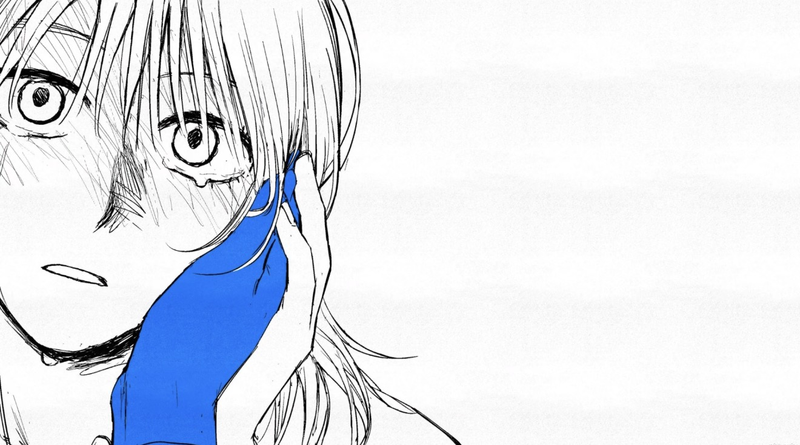
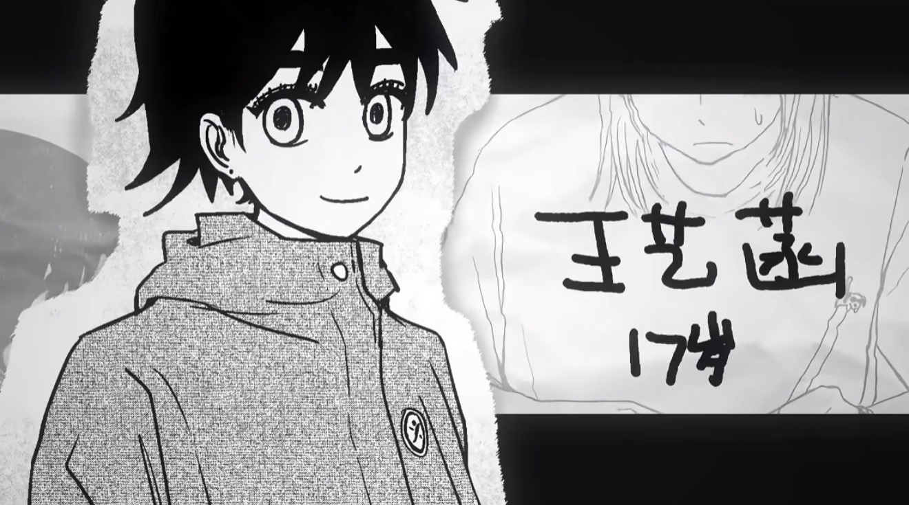
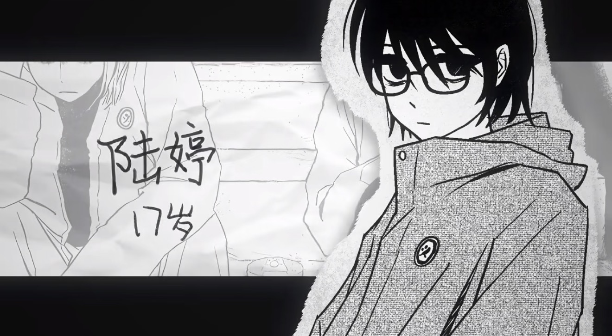
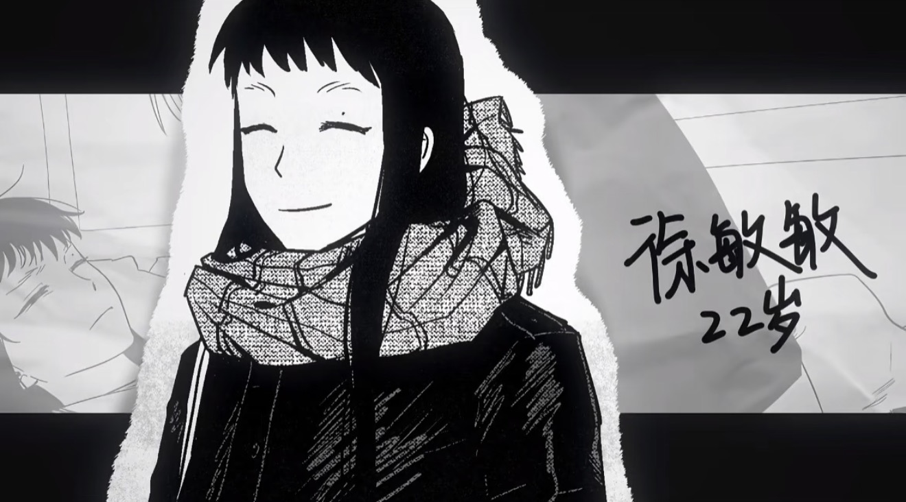

| Homepage | 游戏简介 | 角色介绍 | 内容底蕴 | 游戏背景 |
角色介绍【赵颖】 作为玩家操控的角色，赵颖生活在一个重组家庭，内心渴望着爱与认可。她努力压抑自己的情绪，面对家庭的冷漠和校园的霸凌，内心积压着巨大的痛苦。 她不是传统意义上的“爽妹”，而是一个在道德困境中犹豫、在痛苦中挣扎的真实女孩。 她的诉求很简单：一个独立的房间、家人的关心、不被忽视的自我。
 【王艺菡】 王艺菡是许多玩家的首选攻略对象。她家境优渥，性格开朗直率，是典型的行动派，对朋友极其讲义气。 她会替赵颖出头，心疼她的痛苦，是赵颖身边最“正常”、最温暖的存在。 她的友情深厚，认为友情比爱情更重要，愿意让对方成为自己一辈子的家人。 玩家普遍认为她是游戏中最耀眼的角色。
 【陆婷】 陆婷是一个非常复杂且“阴湿”的角色。她有着强烈的占有欲和自残行为，情感表达方式极端而扭曲。 她对赵颖的爱是单方面的、近乎病态的，会因为赵颖的帮助而感到愤怒，让人感到疲惫和捉摸不透。 她就像一团被拉长到无法复原的弹簧，生活充满了泥泞和痛苦。
 【徐敏敏】 徐敏敏是一个极度疏离和冷漠的人，道德感几乎为零，行事风格以“好玩”为驱动。 她很少提供情感支持，更倾向于用实际行动回应。 她像一团飘忽不定的雾，让人难以看透，甚至让人怀疑她的真实身份和动机。 与她发展关系就像和一个回避型人格相处，非常辛苦且充满未知。

作者：邓雯文1115 清仁SJNA |